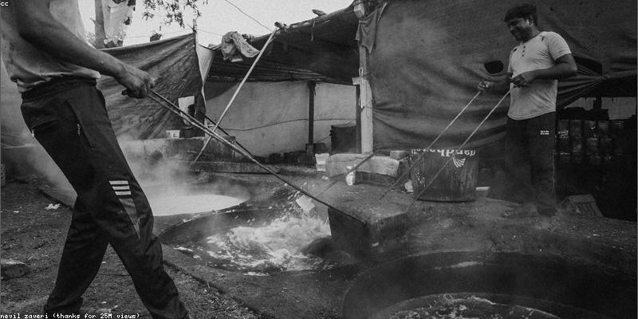

Primary Human Drivers

Climate change is primarily caused by human activities that release greenhouse gases into the atmosphere. These activities have significantly increased since the Industrial Revolution.
- Burning Fossil Fuels: The combustion of coal, oil, and gas for energy and transportation is the largest source of global emissions.
- Deforestation: Cutting down forests for agriculture or timber reduces the planet's ability to absorb CO2 from the atmosphere.
- Industrial Processes: Manufacturing, cement production, and chemical industries release a variety of potent greenhouse gases.
- Agriculture: Livestock farming and the use of synthetic fertilizers release significant amounts of methane and nitrous oxide.
The Role of CO2
Carbon dioxide is the most significant greenhouse gas released by human activities. Its concentration in the atmosphere is now at its highest level in at least 800,000 years.